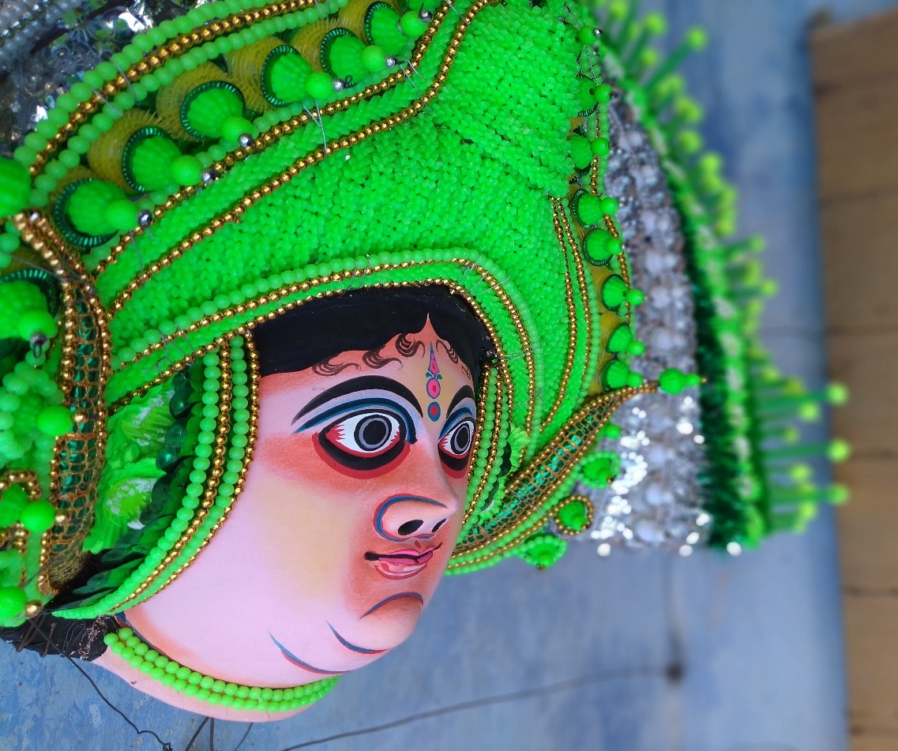
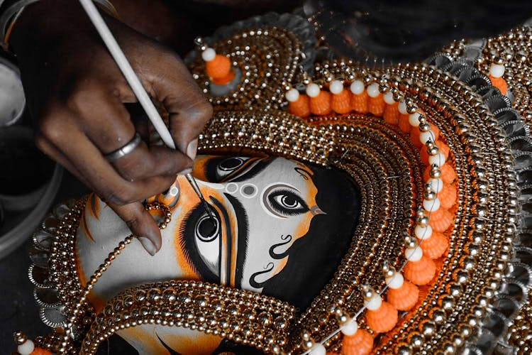
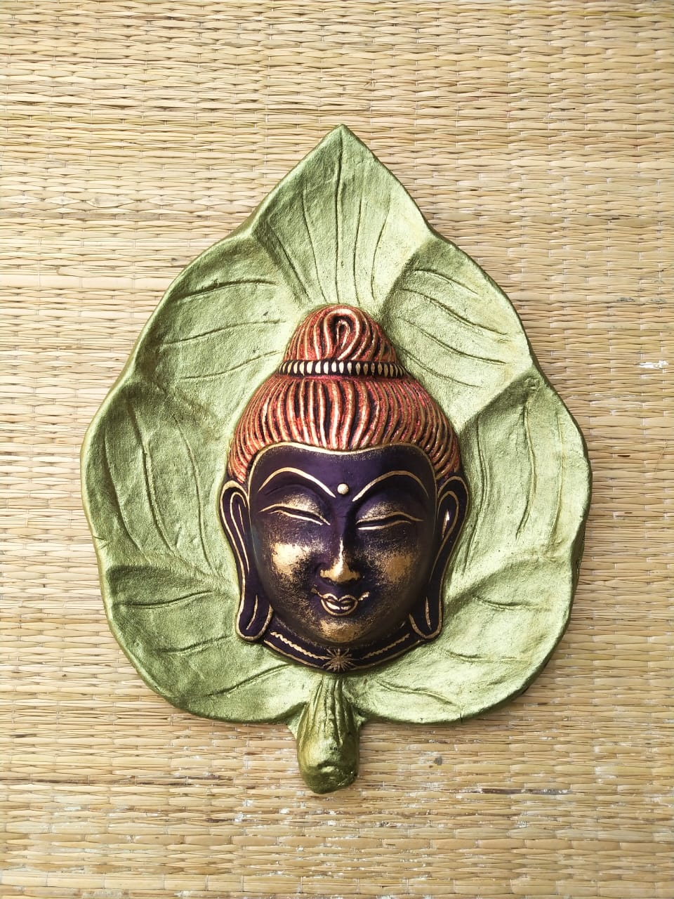
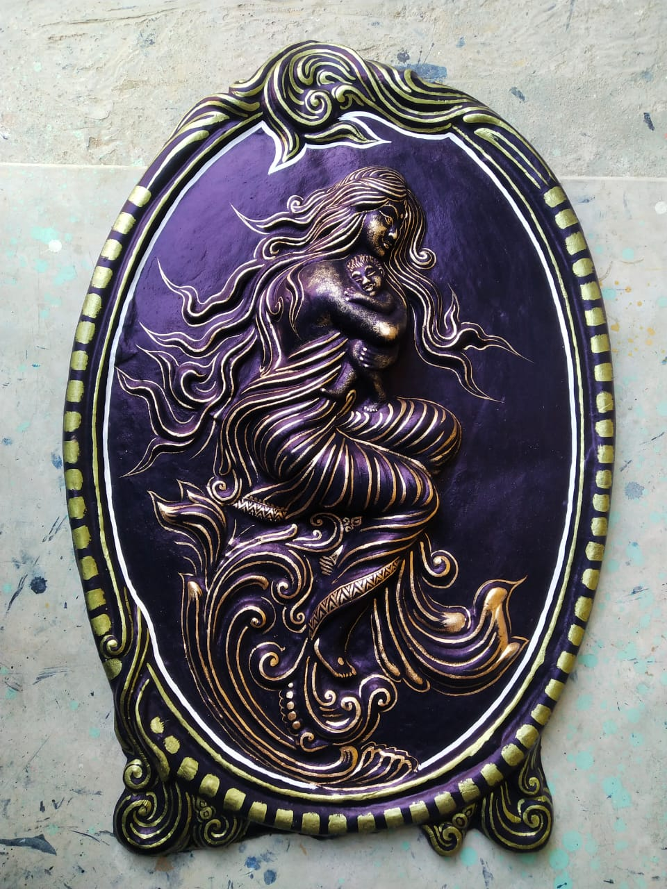
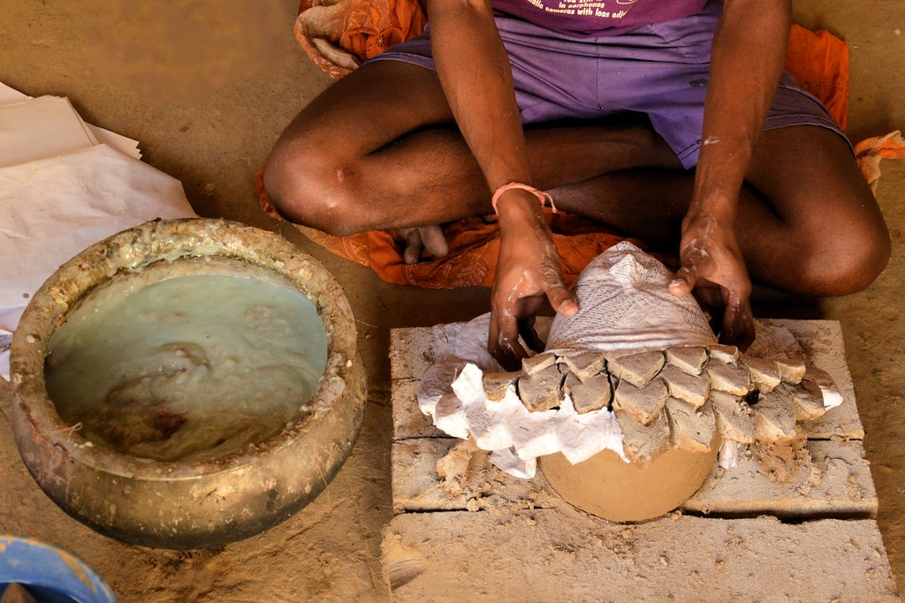
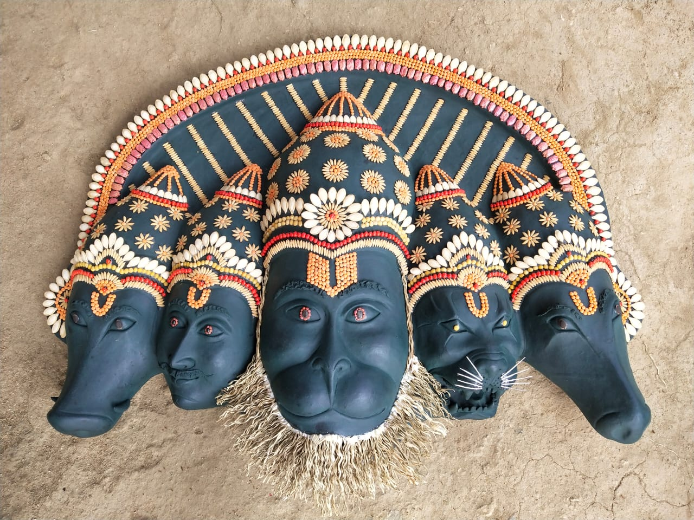
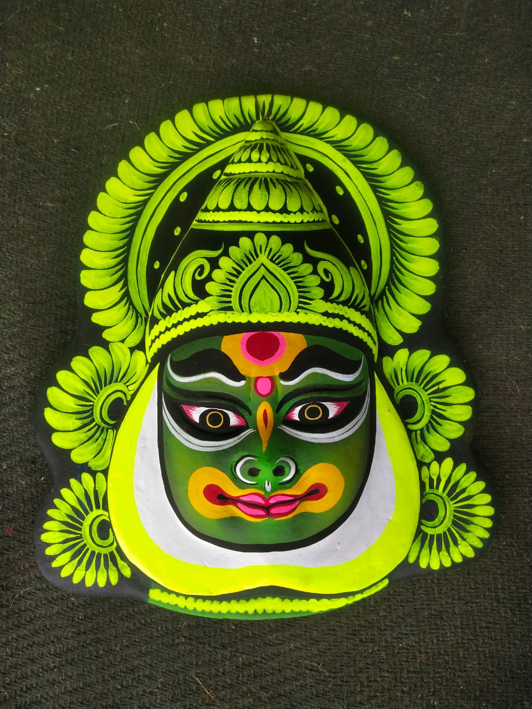
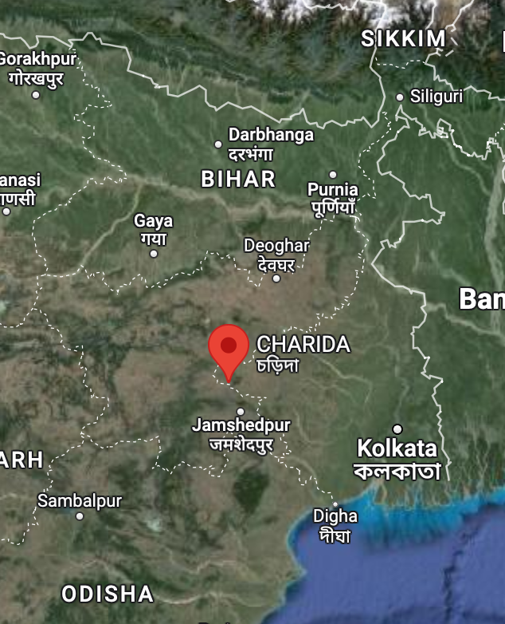

About
The Chhau mask is a traditional cultural heritage of Purulia in the Indian state of West Bengal. The Chhau mask of Purulia is registered on the List of Geographical Indications. As the basic difference of Purulia Chhau the mask is unique and traditional. It is the mask which differentiates the Purulia Chhau from its other two significant branches: the Seraikella Chhau of Jharkhand and the Mayurbhanj Chhau of Odisha. The Jharkhand counterpart does involve masks but they are rather simpler, small and evocative, without any of the pompous vibrancy of the Purulia variants. It is the Purulia form only that uses large evocative masks along with elaborate costumes that intensify the energetic performance, despite the challenges to physicalization. The mask allows the artists to morph into the character therefore when an artists wears a particular mask, he or she “gets into character immediately, transforming into mellow Kartik, fierce Ravana, or Durga's ferocious lion. 
History
The tradition of making Chhau masks started during the rule of king Madan Mohan Singh Deo of Baghmundi. The Chhau mask is traditionally associated with the age-old dance forms in Purulia district. The tradition of mask-making was popularised by Buddeshwar, who is venerated as the first mask maker of Charida. In Charida, there is also a statue of Buddeshwar. He is said to have created the first male and female masks, known as Kirat and Kiratni, representing forms of Shiva and Parvati. This was a turning point in the history of mask-making.
The Purulia Chhau mask received the GI tag in 2018. This has been a welcome step: the artists have become more aware of their intellectual property rights. Besides being used for performances, some of the masks are sold as keepsakes and souvenirs particularly to the tourists.

History...
The masks are of various types used for particular dance renditions. They are classified into the babu, bir, bhoot, animal, birds, and nari masks. The babu category includes masks for chiefly male gods like Narayana, Ganesha, Kartik, Krishna, Shiva, etc. The bir or the hero masks would include those worn by artists who play the demons like Ravana and Mahishasura. Tiger, buffalo, monkey heroes like Bali and Sugriva from the epic Ramayana fall under the category of animal masks. Durga, Parvati, Saraswati and incarnations of the Goddess are categorised under the nari or women masks, while bird masks are for Jatayu, peacock, swan, etc.
The masks are made “according to his or her facial measurements by their trusted craftsmen, who work in close collaboration with the troupes. In this way, the mask-maker imparts his own understanding of the character which eventually also shapes the dances.

History...
Performers use only the full-face masks, but smaller masks are also produced and sold to the art collectors. The performance masks are full-face, and covers almost the parietal bone to the base of the back skull which allows for an improved stability especially when halos strung of wire are added around the headgear. The wire frames on the headgear are embellished using coloured beads, sequins, confetti, etc., to evoke the image of the imposing gods and goddesses, grotesque demons, or specific animals which the masks portray.

Manifacture
Chhau masks are made by artists from the Sutradhar community. The making of a mask goes through various stages. 8-10 layers of soft paper, immersed in diluted glue, are pasted one after another on the mould before the mud mould is dusted with fine ash powder. The facial features are made of clay. A special layer of mud and cloth is applied and the mask is then sun-dried. After this, the mould is polished and a second round of sun drying is done before separating the layers of cloth and paper from the mould. After finishing and drilling of holes for the nose and eyes, the mask is coloured and decorated.

Manifacture
The base of the mask is formed with a wood or a cane, which most mask makers own. After this, the clay is applied to the base and a mould is created. The mould, after it has been dried, is separated from the base and layered with papier mache. The papier mache is smoothened by adding another layer of clay. Lightweight cotton fabrics are also used at times. The making of the base requires roughly about three days, and most of this time is needed for sun-drying. However, before the entire mask dries up completely details such as hair, eyes, eyebrows, etc., are added. The decoration and painting of the masks requires another set of three working days or more. Smaller and simple masks, usually meant to be taken and sold as souvenirs, are painted and decorated within a day.

Manifacture
The clay used for mask-making is sourced from alluvial soil from neighbouring farms, while hair and animal manes are made using jute or acrylic wool. Paint, wire, the sequins, shiny stars, leaves and other decorative items come from the wholesale markets of Kolkata in large quantities. Older masks being sold from the artisan's collection undergoes what is called polishing: that is the artists add colour to spruce them up. While blow dryers are used to hasten the drying phase so as to meet the clients' deadline. In Charida, the artists are not just skilled craftsmen but also very able sales people.

Charida
Charida, located in the Baghmundi block of Purulia, is the centre of making Chhau masks, where nearly every residence along the street becomes a workshop simultaneously. Some even have names like Mukhosh Ghar (House of Masks). The place has been designated as the Bengal government's Department of Micro, Small and Medium Enterprises \& Textiles, in association with UNESCO. Charida is also known as Mukhosh Gram, literally meaning the mask village.
In Charida, mask making is a family business. The place has 300 individuals from 115 families approximately engaged in this art of mask creation. Simple ingredients like clay and paper is used, however the process is slow, detailed and progresses from one step to another. While for the final decorations tinsel, glass beads, zari , plastic flowers, feathers, strips of coloured jute for hair, etc. are used. Even little girls and boys are engaged in this creative process, and this is a way that the art is handed down from one generation to the next.
The chief mask-maker supervises the task executed mainly by the women folk in the family. The distinctive decoration, which adds the vibrancy and elaborate effect for which the Purulia masks are known, is done almost entirely by the women of the household. 